UDL > Comments
This section describes new options user have when defining comments.
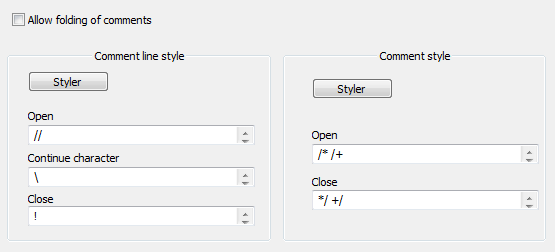
Comments handling in UDL 2.1 changed significantly.
Let’s start with the most obvious part, the GUI.
Line comments
Line comments now support three set of keywords: open, continue and close.
UDL2.1 has an option to force line comments to start at the beginning of line.
When this option is switched on, line comments will be recognized only if they are located at the beginning of line. Anywhere else, they will be treated as default text.
Open
In most languages this is the only one you’ll need. Define your comment line starters here: #, //, !
Example:
// line comment
Continue
If this string is at the end of line comment, than line comment extends to following line: e.g. \
Example:
// line comment \
that extends to next line
Close
This is a very rare feature, but in some languages comments have start and end markers, but if end marker is missing, a comment automatically becomes a line comment and ends at the end of current line. This is where you need to define close string, e.g.: !
Example:
// line comment ! text that doesn't belong to a comment
This is a very “basic” demonstration, but it serves its purpose well.
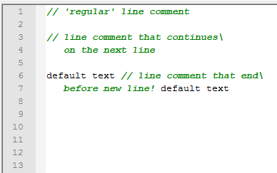
- line 1, this is what line comments look like in most languages. They start somewhere, and end at the EOL (end of line)
- line3, if your language supports line comment continuation to next line, like in this C++like example, you may define that too
- line 6, this is demonstrator of a special case where line comments have a closing string. So, they end at EOL or closing string whichever is reached first.
Comments
Comments are defined in a way that is similar to UDL 1.0. You just create a list of strings that represent comment start position and comment end position. But there is a hidden feature here. In picture 1, notice vertical position of Open and Close edit boxes! Notice how I defined two separate comment pairs and how they align vertically. I wanted to define these two comment sets:
/* this is a C language comment */
/+ this is a D language comment +/
Now, lets try to nest these two comment types, to see the difference between UDL 1.0 and UDL 2.x
This is an UDL 1.0 screen capture.
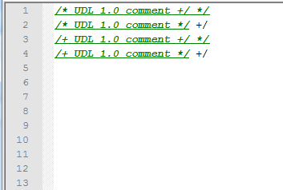
Comments are underlined so it would be more obvious where they end. Notice how */ string always ends a comment!! This happens because UDL 1.0 simply goes through a list of comment close strings, and as soon as it finds the first one to match, it accepts it as a comment end. UDL 1.0 has no way to connect matching open/close strings. It simply settles with the first one it can find, which works great if you have just one pair. If you have more, nesting will break, as demonstrated in line 4.
This is an UDL 2.1 screen capture.
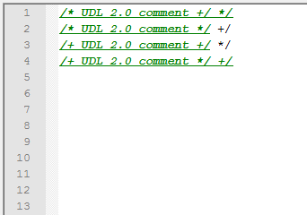
Notice how in line 4, UDL 2.1 correctly highlights D-style comments, even if there is a */ within comment. This is possible because UDL 2.1 uses indexes to match correct close string. When Open string is found, its index is recorded internally (e.g. for /+, index is 1). That means that a comment can be closed only by a Close string of the same index.
So, users can just vertically align open and close strings, and UDL 2.1 will take care of the rest.
Nesting of comments
Example 1
Comments in UDL 2.1 support nesting. The only thing user needs to do is to select which keyword type can be nested. Do this by selecting appropriate check box in nesting section of Styler dialog. In our first example we are going to allow nesting of comments within comments.
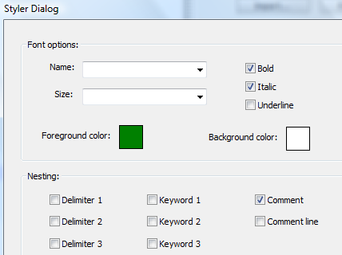
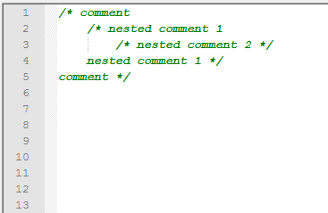
As you can see, UDL 2.1 happily allows you to have nested comments. But there is a better way to do the same thing as demonstrated in example 2.
Example 2
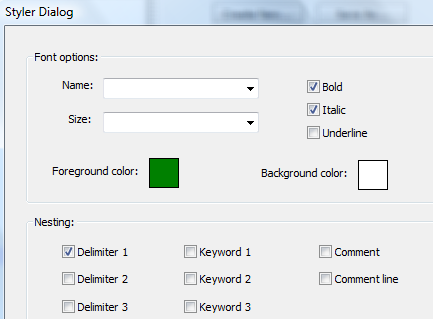
- Define Delimiter 1 exactly the same as Comments
- Allow Delimiter 1 to have nested Comments
- Likewise, allow Comments to have nested Delimiter 1
- Delimiter 1 and Comments will have similar but slightly different color
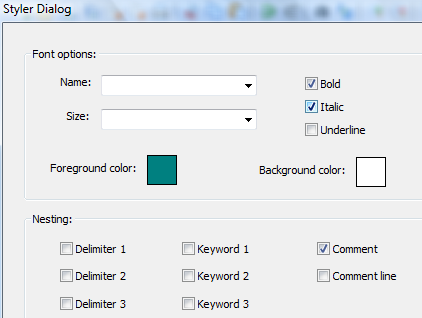
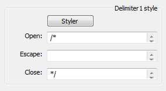
And voila !!!
Now your nesting is not only allowed, it is also highlighted.
Call me a geek that gets excited over nothing, but I think this is really cool :-)
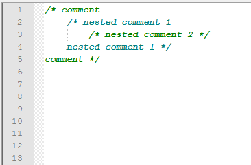
Example 3
In this example we will highlight nested line comments.
Just like in example 2, we define similar yet different styles, and allow nesting of Line comments within Comments.
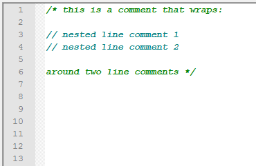
Example 4
If you want Line comments to look like Comments, but to be highlighted when nested (and only when nested), that can be done too.
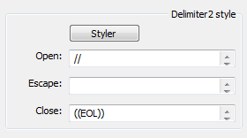
Just define Delimiter 2 (any delimiter will do, I’ll use this one for demonstration) like in previous picture. “((EOL))” is a special keyword that is expanded to a vector of three strings:
\r\n
\n
\r
So, that every new line combination is covered.
“((EOL))” has been introduced just for this reason. It allows users to define Delimiter equivalent of Line comments.
Notice how I wrapped EOL with special double brace operator. This operator has a special meaning in UDL 2.1 and it is explained in more detail in Delimiters section. For this example it is enough to remember that it expands EOL into an end of line character.
As you can see, nesting of delimiters that imitate line comments works just as good.
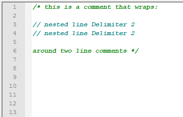
Example 5
- define standard C++ line comments
- allow nesting of Delimiter1 within line comments.
- define Delimiter1 as in this example
- Notice how you need to define separate EOL for each open keyword (and make sure EOL’s are separated with spaces !!)
- now you have your TODO’s highlighted
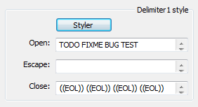
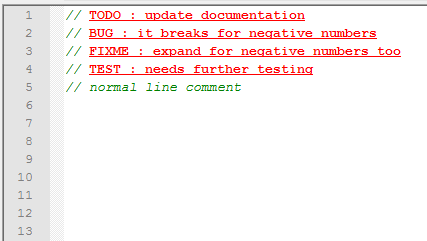
Folding of comments
If you were not scrolling too fast, you might have noticed a small check box at the top: Allow folding of comments
Such small feature, but it took so much time to develop it.
Let’s explore it.
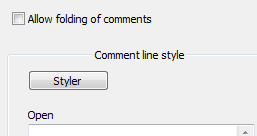
Example 6
When option Allow folding of comments is set, UDL 2.1 automatically tracks comment lines and allows folding of two or more consecutive comment lines.
- line 1, two consecutive line comments can be folded
- line4, a multi-line comment can be folded
- line 8, comments can be mixed with line comments
- line 11, another multi-line comment, this time it contains some non comment text in first and last line
Notice how last example can be folded only in “pure” comment lines. Folding of comments never folds non comment text !!
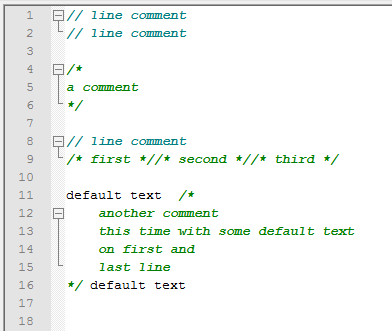
Example 7
If you want to document code with heavy use of comments, trade off is code readability. There will be a lot of scrolling. A lot !!
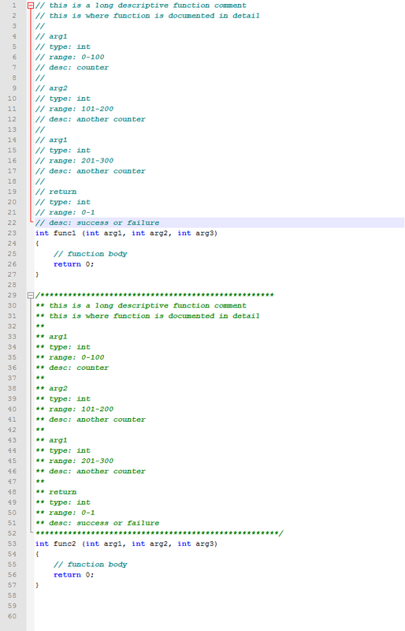
And UDL 2.1 is here to help.
Set Allow folding of comments, and you’ll get rid of annoying comments simply by folding them. Just like in the next picture.
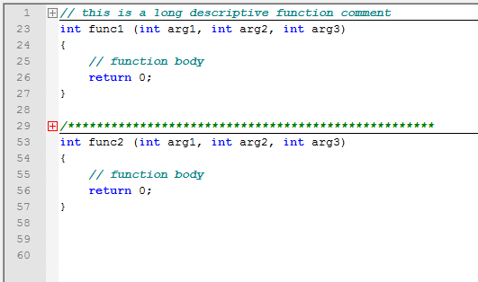
And there you go.
No more unnecessary scrolling :-)
On the other hand, if you find this feature tiresome, just disable it.
Conclusion
As you can see, comment handling in UDL 2.1 changed quite a bit from UDL 1.0.
I tried to make it intuitive and easy, and I hope users will like it as much as I do.
This page of the User Manual is derived and edited from Ivan Radić's udl-documentation, which he has maintained for Notepad++'s UDL 2.1 since 2015, under the CC BY 4.0 license.